We offer:
- Early Childhood Programs (Nursery, Pre-kinder, Kinder)
- Elementary Programs (Grade 1-6)
- Junior High School Programs

Nursery
PRE-REGISTERIn nursery, the children build their social skills, language skills, and self-control by playing and learning together. With support from teachers, children learn to resolve conflicts that may come up during play. Emotional development lets your child understand his feelings and the feelings of others.
Once enrolled in kindergarten, your child will learn basic concepts like reading, writing, math, science, time, shapes, and more. These skills will form a foundation for learning future concepts in each subject. Additionally, they learn important social skills as well as how to function in a school environment.

Kindergarten
PRE-REGISTERElementary
PRE-REGISTERThe elementary school years are packed with learning, as kids explore the fundamentals like reading, writing, math, science, and social studies. In grade school, children also develop important social and emotional skills that will carry them into adulthood, primarily how to make friends and cooperate with others.
After completing primary education, students can continue on to lower secondary education. In the Philippines, this is called Junior High School (JHS). Students complete Junior High School by taking exams for the Junior High School Diploma.
Junior High School (Grade 7-10)
PRE-REGISTERQualifications
- Nursery
- The applicant must already be four (4) years old by June 1, 2020.
- Kindergarten
- The applicant must already be five (5) years old by June 1, 2020. Kindergarten applicants who will turn five (5) years old after June 1, 2020 will take an entrance exam and the Guidance Counselors will have to assess the student.
Admission Requirements:
- Assessment Exam (for Junior High Only)
- Report Card (Form 138) w/ LRN No.
- Form 137
- Certificate of Good Moral Character
- 2pcs 2x2 colored ID Picture white background and name tag
- 2pcs long brown envelopes
- 1 original PSA Birth Certificate
- 2 mailing stamps
- 1pc long white folder
For Old Students
- Report Card (Form 138) w/ LRN No.
- Certificate of Good Moral Character
For Transferees:
- Assessment Exam
- 3 pcs 2x2 ID pictures with name tag & white background
- Transcript of Records
- Photocopy PSA Birth Certificate
- Certificate of Eligiblity to transfer
- Certificate of Good Moral Character
- 2pcs White Mailing Envelopes (long)
- 2pcs Mailing Stamps
- 2pcs Long Brown Envelopes
- 1pc Long White Folder
OFFICIAL ACCOUNTS